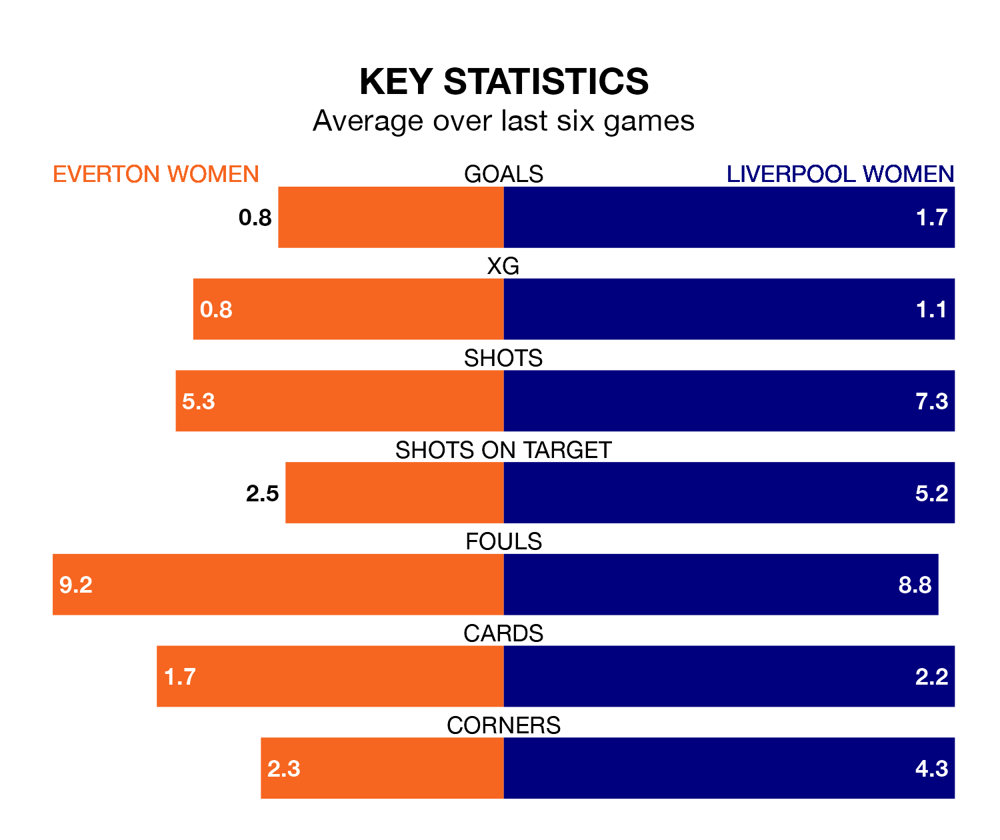

Liverpool Women visit Everton Women at Walton Hall Park on Sunday lunchtime on the back of three consecutive wins in the FA Women's Super League.
Liverpool have picked up 10 points from their last six games, and they face a Toffees side who have lost their last two matches, and collected three points from the last possible 18.
In the last 10 years, Everton and Liverpool have played each other on 18 occasions. They won seven each, and they drew four times.
On average, the Toffees scored 1.1 goals and Liverpool 1.1 in those matches.
Their last meeting was on December 13, when Liverpool won 2-1 away.
With 14 goals in 16 games so far this season, Everton are the league's lowest scorers with 0.9 goals per game. And they are conceding more than average, letting in 29 goals at a rate of 1.8 per game.
Liverpool are also below average scorers, with 1.6 goals per game, compared to a league average of 1.7. They have conceded 1.3 goals per game.
In Courtney Brosnan, the Toffees can rely on one of the league's safest pair of hands. She has kept three clean sheets in her 14 appearances this season in the FA Women's Super League.
In the visitors' net, Rachael Laws also has three clean sheets in 12 games.
The home side are ninth in the table after 16 games, of which they have won four and drawn two, earning 14 points.
Liverpool are four places ahead of Everton in fifth, with eight wins and four draws putting them on 28 points.
Everton's last match was on March 16, a 2-1 loss against Aston Villa Women, with Elise Isolde Stenevik getting the goal for the Toffees.
Liverpool beat West Ham United Women 3-1 last time out, on March 17, with Leanne Kiernan, Missy Bo Kearns and Sophie Roman Haug on the scoresheet.
Updated: 10:19 (UTC), 22/03/24